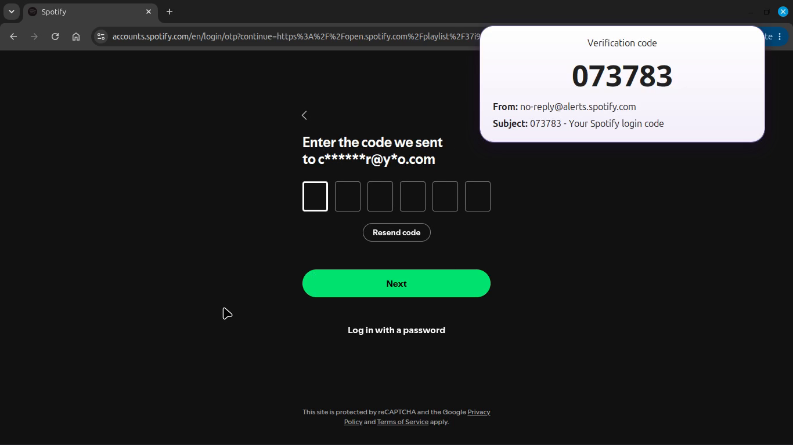
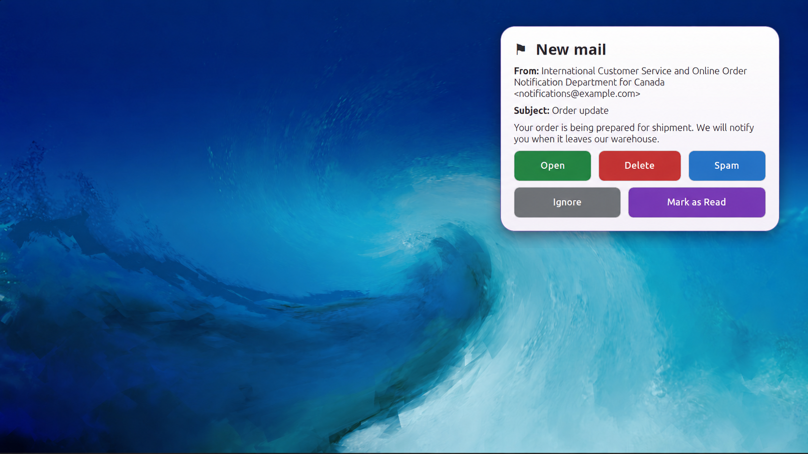
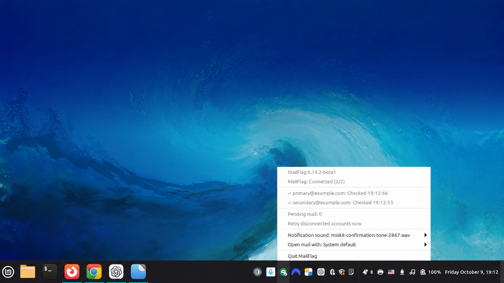

Without MailFlag
◎Open
webmail
→webmail
↻Refresh
inbox
→inbox
✉Find the
message
→message
▤Open
it
→it
▧Select
the code
→the code
▣Copy
it
it
Email notifications for Linux
MailFlag watches your mailbox in the background and shows verification codes as soon as they arrive. One click copies the code to your clipboard.

Get your codes in seconds instead of checking your inbox manually.
A real sign-in flow: the verification code arrives, MailFlag detects it, and the code is ready to copy.
MailFlag also works as a lightweight desktop notification layer for regular email.

Quick actions: Open • Delete • Spam • Ignore • Mark as Read
Handle simple messages without opening your full email client.
If a notification disappears before you handle it, MailFlag keeps a small persistent indicator on your desktop so pending mail does not get forgotten.
MailFlag continuously monitors your configured mailboxes and reconnects automatically after temporary network interruptions or sleep/resume.

Multiple accounts • Monitored folders • Automatic reconnect • Background operation
Your email stays between you and your email provider.
MailFlag connects directly to your mailbox over IMAP.
Linux
Currently tested primarily on Linux Mint 22.x.
Yahoo Mail
Yahoo Mail is currently the only supported email provider.
Gmail, Outlook, iCloud and other providers are planned for future versions.
Which provider would you like to see next?
Request a provider →MailFlag is licensed under the GNU General Public License v3.0.
You can inspect the source code, report issues, suggest features, and contribute on GitHub.
View source on GitHub →Download MailFlag for Linux and start getting your verification codes instantly.
Requires a Yahoo Mail account.
↓ Download .debRelease notes →